Plataforma educativa · Documentación completa para revisión
Presentación, manual de funciones, capturas, anexo técnico y registro de cambios. Documento dirigido a colegas docentes de francés.
Miguel David Tillero Álvarez · Profesor de FLE
San Cristóbal de Las Casas, Chiapas, México
Octubre de 2026 · Versión 2.0 · estado de la plataforma al 14 de octubre
Este archivo reúne, en un solo lugar y en este orden, todo lo que hace falta para entender la plataforma «Vive el francés» sin leer el código ni haber estado presente mientras se construía. Cada parte se lee sola: no hace falta terminar una para empezar la siguiente.
| Parte | Qué contiene | Para quién | Tiempo |
|---|---|---|---|
| 1 · Presentación | Por qué existe la plataforma, los problemas que resuelve, el objetivo y la visión, la cronología en siete fases con sus fechas reales, las cifras y la hoja de ruta. Empieza aquí. | Todos | unos 20 min |
| 2 · Manual de funciones | Dieciocho fichas, una por función, organizadas por perfil (docente y administración, estudiante, familia). Cada ficha dice para qué sirve, quién la usa, el paso a paso y sus límites. | Todos, a consulta | unos 30 min |
| 3 · Capturas | Las catorce pantallas que cita el manual, con su pie explicativo. | Todos | — |
| 4 · Anexo técnico | Arquitectura, las 30 tablas, la seguridad por filas, el orden de los 29 guiones de base de datos, las decisiones con su porqué y la deuda técnica reconocida. Opcional. | Perfil técnico | unos 20 min |
| 5 · Registro de cambios | Los cambios sustantivos del 7 de septiembre al 9 de octubre de 2026, con fecha y código, agrupados en siete fases. | Perfil técnico | a consulta |
| 6 · Informe de privacidad | Qué se retiró o se tapó antes de compartir este material, y el resultado de la búsqueda automática de datos sensibles. | Todos | 2 min |
Plataforma educativa · Documento de presentación
Por qué la construí, qué resuelve, cómo se hizo y hacia dónde va. Documento dirigido a colegas docentes de francés.
Miguel David Tillero Álvarez · Profesor de FLE
San Cristóbal de Las Casas, Chiapas, México
Octubre de 2026 · Versión 2.0 · actualizada al 14 de octubre
Esta plataforma no nació de una idea sobre tecnología educativa. Nació de cinco problemas concretos que tenía cada semana en mis grupos, y que ninguna herramienta suelta me resolvía del todo.
En un grupo reducido, una ausencia no se recupera sola. El estudiante volvía preguntando «¿qué vimos?», y la respuesta quedaba en manos de un compañero, de un mensaje apurado o de mi memoria. No existía un lugar donde el contenido de cada clase estuviera escrito antes y después de darla.
Doy clase a menores de edad. Sus madres y padres tienen derecho a saber si su hijo asiste, cómo va y qué observo de su trabajo. Pero el único canal era preguntármelo a mí, por WhatsApp, y mi respuesta era necesariamente parcial: lo que recordara en ese momento. Un representante bien informado no debería depender de la memoria del profesor ni de su disponibilidad a las diez de la noche.
Trabajo con transferencias y depósitos en efectivo, sin emisión de factura con RFC. Eso es legítimo en mi situación, pero significa que no hay ningún sistema externo que me lleve la cuenta: quién pagó, cuánto, cuándo, y quién sigue pendiente. La información vivía en comprobantes dispersos en conversaciones de WhatsApp.
El grupo de WhatsApp es excelente para avisar que la clase empieza en diez minutos. Es pésimo como repositorio: lo que se compartió hace tres semanas ya no se encuentra, los documentos caducan, y el mismo hilo mezcla una duda gramatical con un recordatorio de pago y una foto del cumpleaños de alguien. Todo convivía ahí porque no había otro sitio.
Un formulario para inscribir, una hoja de cálculo para la asistencia, un documento para la planificación, otro para las notas. Cada una funcionaba; ninguna sabía de la existencia de las demás. El trabajo de mantenerlas coherentes era mío, y crecía con cada grupo nuevo.
Es un sitio web público con un espacio privado detrás. El sitio presenta mi trayectoria, los cursos y los servicios. El espacio privado es la plataforma propiamente dicha, y tiene tres puertas distintas según quién entre:
| Perfil | Qué encuentra al entrar |
|---|---|
| Docente y administración |
Las clases de hoy, el calendario del ciclo, la planificación de las doce sesiones, la lista de estudiantes, la asistencia, las notas con su comentario, los pagos registrados y el enlace de inscripción de cada grupo. |
| Estudiante | Su curso con horario y modalidad, el recorrido de las unidades ya trabajadas, el calendario completo del ciclo, el material, el libro del curso para leer en línea, su asistencia, sus resultados con mi comentario y el estado de su pago. |
| Familia padre, madre o representante |
Su propia cuenta, con su propia contraseña, y una vista de solo lectura del avance de su hijo o hija: asistencia, resultados comentados, próximas clases y pagos. Sin compartir la contraseña del estudiante. |
Detrás hay además un sistema de evaluación en línea —Sentinelle— con clave de respuestas que nunca viaja al navegador del alumno, reloj del servidor y un solo intento por persona; y un mecanismo de boletines que entrega los resultados a cada familia mediante un enlace privado, sin exigirles crear una cuenta.
La plataforma no sustituye la clase. Sustituye las quince conversaciones sueltas que hacían falta para sostenerla.
Que toda la información de un curso de francés —contenido, asistencia, evaluación, pagos y comunicación con la familia— viva en un solo lugar, accesible para quien le corresponde y solo para quien le corresponde, sin depender de mi disponibilidad personal para consultarla.
Que un profesor de francés independiente, o una escuela pequeña, pueda dar un ciclo completo apoyado únicamente en esta plataforma: abrir el grupo, inscribir, planificar, dar clase, evaluar, entregar resultados comentados y rendir cuentas a las familias. Que hacerlo bien no dependa de tener un equipo administrativo detrás ni de pagar una suscripción mensual por cada función.
Tres convicciones sostienen esa visión:
Entre el 7 de septiembre y el 9 de octubre de 2026 se registraron 212 cambios documentados en el historial del proyecto, en 26 días de trabajo. No fue un desarrollo lineal: hubo errores, retrocesos y una reconstrucción completa en la primera semana. Lo que sigue respeta ese orden real, porque las vueltas atrás también enseñan.
| 7 sep | Reestructuración completa: de una página única a una arquitectura de varias páginas reales. Perfil, servicios, cursos, galería, contacto. |
| 8–9 sep | Recuperación tras una pérdida de contenido por error propio. Se restauran páginas completas desde el historial. Se incorporan las aulas virtuales de A1 y B2. |
| 10 sep | Separación definitiva en páginas por sección. Club «Vendredi entre Amis». Métodos de pago reales. |
Esta fase enseñó la primera lección: sin control de versiones no hay trabajo serio. Lo que se perdió el día 8 se recuperó porque estaba registrado.
| 11 sep | Base de datos, autenticación y roles sobre Supabase. Primera versión del esquema: cursos, inscripciones, sesiones, asistencia, evaluaciones y notas. |
| 11 sep | Primera crisis de seguridad. Las reglas de acceso por filas entraron en recursión infinita. Se corrigieron y, en la misma revisión, se cerraron tres huecos por los que un usuario podía ver datos ajenos. |
| 11 sep | Enlace de inscripción por curso. Edición de cursos y generación automática de las clases a partir del horario. |
Veintiún cambios en un solo día. La lección fue que la seguridad no se añade al final: se diseña con la primera tabla, o se paga caro después.
| 15–18 sep | Buscadores: mapa del sitio y archivo de indexación. Carrusel de vídeos. |
| 21–25 sep | Relato de trayectoria con 19 capítulos verificados uno a uno: nombres, cargos, fechas y lugares contrastados antes de publicarse. Galería profesional. |
Fase aparentemente secundaria, en realidad decisiva: una plataforma a la que se invita a familias necesita antes un sitio que explique quién está detrás.
| 25 sep | Ciclo A1.4 creado: doce sesiones planificadas con tema y contenido, dos evaluaciones de cierre, horario y modalidad híbrida. |
| 25 sep | Espacio del estudiante: bienvenida, recorrido de unidades, «Mis resultados», repositorio de material. |
| 25 sep | Datos del representante en la inscripción. Los enlaces de clase pasan a una tabla aparte, bajo llave: se descubrió que un visitante anónimo podía leer el enlace de Zoom, y después que también podía un inscrito sin pagar. Ambos huecos quedaron cerrados. |
| 25 sep | Auditoría móvil: tamaño de los objetos táctiles y legibilidad en teléfono, que es como la usan de verdad. |
| 25–26 sep | Seis intentos para arreglar el inicio de sesión. La causa no estaba en el código sino en el almacenamiento del navegador. Se reescribió para que la sesión sobreviva aunque el navegador falle al guardarla. |
| 26–28 sep | Correo propio para los mensajes de verificación. Se evaluó un servicio profesional con dominio propio y se optó por una solución intermedia, funcional y gratuita, dejando documentado el camino al escalón siguiente. |
| 28–29 sep | Plazos de inscripción y de pago, separados: inscribirse cierra el primer día; pagar tiene una semana. Estaban mezclados, y mezclados dejaban fuera a quien no pagara el día uno. |
| 29 sep | Material de comunicación: infografía del ciclo, infografía del paso a paso para entrar, y los mensajes para las familias. |
| 1 oct | Pagos por transferencia manual, sustituyendo una integración de cobro automático que no correspondía a la forma real de trabajar. |
| 2 oct | Resultados de la evaluación A1.4 publicados en «Mis resultados», con desglose por partes y comentario. |
| 2 oct | Boletines con enlace privado. Las notas no podían esperar a que cada familia creara su cuenta: cada estudiante recibe un enlace secreto que su familia abre sin contraseña. |
| 2 oct | Baja de estudiante: un alumno se retiró a mitad de ciclo y no había forma de reflejarlo sin ensuciar las estadísticas ni las cuentas. |
| 3 oct | Acceso propio para familias. Una madre preguntó por WhatsApp: «y uno como mamá, ¿cómo entraré a la plataforma?». No había respuesta. Ese mismo día se construyó. |
| 4 oct | Libro virtual. El libro del curso, que los estudiantes ya compraron, se lee dentro de la plataforma. El archivo no se publica en el sitio: vive en un almacenamiento privado, se sube dividido en partes y solo lo abren los inscritos activos del grupo, con una marca de agua con el nombre de cada lector. |
| 5 oct | El visor se quedaba en «Cargando página…» con el libro real. Se cambió la forma de descarga y ahora muestra el avance; el libro se divide en partes de unos 6 MB para que la primera página aparezca rápido en el teléfono. |
| 5 oct | Segundo grupo: B2. Se replicó toda la estructura del A1.4 —calendario de doce clases, enlace de clase, evaluaciones de cierre, materiales y boletines— para un grupo de nivel avanzado, con ciclo del 5 de octubre al 11 de noviembre. Los estudiantes se inscribieron el mismo día del anuncio. |
| 5 oct | La página de boletines deja de estar atada al A1.4: un selector permite trabajar con cualquier grupo. |
| 9 oct | Los enlaces de Zoom salen del repositorio. Ya no se escriben en los archivos públicos del proyecto: se guardan solo en la base de datos, y un control automático impide volver a subirlos por error. La familia ve el botón «Entrar a la clase» si la inscripción está activa. |
| 9 oct | Pausa de desarrollo para documentar el proyecto y compartirlo con colegas. |
Volviendo a los cinco problemas del principio, con honestidad sobre lo que está resuelto y lo que no:
| El problema | Estado | Cómo quedó |
|---|---|---|
| El alumno que falta depende de que se lo cuenten | Resuelto | Las doce sesiones están planificadas con tema y contenido, visibles para el estudiante desde el primer día del ciclo. |
| Las familias no pueden seguir el avance | Resuelto | Cuenta propia para el representante, con asistencia, resultados comentados, calendario y pagos. Más los boletines por enlace privado para quien no quiera crear cuenta. |
| Los pagos se llevan en la cabeza | Parcial | Los pagos se registran en la plataforma y el estudiante ve su estado. El registro sigue siendo manual: yo confirmo el comprobante y lo anoto. |
| WhatsApp hace de archivo | Parcial | El material, el libro del curso y el histórico de unidades ya viven en la plataforma. WhatsApp sigue siendo el canal de avisos, y está bien que lo sea. |
| Las herramientas no se hablan | Resuelto | Inscripción, asistencia, planificación, evaluación y pagos comparten la misma base de datos. Un dato se escribe una vez. |
Datos verificables en el repositorio al 14 de octubre de 2026.
Lo que sigue, en el orden en que pienso abordarlo. Nada de esto está construido todavía: el libro virtual y el grupo B2, que figuraban aquí en la primera versión de este documento, ya funcionan (fase 7).
Esta entrega se divide en cuatro partes, pensadas para leerse en este orden:
| Documento | Para qué |
|---|---|
| 1 · Presentación este documento |
El porqué, el qué y el hacia dónde. Suficiente para hacerse una idea completa sin entrar en detalles. |
| 2 · Manual de funciones | Una ficha por función, organizada por perfil: para qué sirve, quién la usa, el paso a paso y sus límites. Es el documento a consultar para saber qué hace exactamente la plataforma. |
| 3 · Anexo técnico | Arquitectura, tablas, seguridad y decisiones técnicas con su porqué. Para quien quiera mirar debajo del capó. |
| 4 · Capturas | Las pantallas reales de la plataforma, numeradas y con pie explicativo. |
Más que una valoración general, me serían útiles tres cosas concretas:
Vive el francés · Plataforma educativa
Miguel David Tillero Álvarez · Profesor de francés (FLE)
Documento de presentación · Versión 2.0 · Octubre de 2026
Plataforma educativa · Manual de funciones
Una ficha por función, organizada por perfil: para qué sirve, quién la usa, el paso a paso y sus límites.
Miguel David Tillero Álvarez · Profesor de FLE
Octubre de 2026 · Versión 2.0 · Estado de la plataforma al 14 de octubre
Cada función tiene una ficha con la misma estructura, para que se pueda consultar salteado sin leerlo entero:
| Para qué sirve | El problema concreto que resuelve. |
| Quién la usa | Qué perfil tiene acceso. |
| Paso a paso | La secuencia real, tal como se hace. |
| Captura | La pantalla correspondiente, en la carpeta 4-Capturas. |
| Límites | Lo que no hace, y lo que todavía exige trabajo manual. |
| Perfil | Dónde entra | Qué puede hacer |
|---|---|---|
| Docente y administración | Panel docente y panel administrativo | Todo: crear, editar, aprobar, calificar, cobrar. |
| Estudiante | Su espacio personal | Consultar lo suyo. No modifica nada salvo su contraseña. |
| Familia | Espacio del representante | Consultar lo de su hijo o hija. Solo lectura. |
| Inicio | Bienvenida personalizada, el recorrido de las unidades ya trabajadas, lo que se va a validar en este ciclo y hasta dónde se llegará. |
| Mi curso | Horario, modalidad, calendario completo con el contenido de cada sesión, y los enlaces de la clase y del grupo —si su inscripción está activa. |
| Mis resultados | Cada evaluación con su nota, el desglose por partes y el comentario del profesor. |
| Materiales | El repositorio de todo lo trabajado, por categoría y unidad, y el acceso a «Mi libro». |
| Mis pagos | Lo pagado, lo pendiente y los datos para pagar. |
Por honestidad con quien revise este manual, estas funciones se han mencionado en conversaciones sobre el proyecto pero no están construidas. El libro virtual y el grupo B2, que figuraban en esta lista en la primera versión, ya funcionan (fichas 1, 14 y 16). Figuran en la hoja de ruta del documento de presentación.
| Función | Estado real |
|---|---|
| Herramienta oral para otros niveles | La actual sirve solo para la evaluación A1.4. El cierre del B2 necesita una propia. |
| Recordatorios automáticos | No construidos. Los recordatorios de clase y de pago se envían a mano por WhatsApp. |
| Constancias | Las tablas existen; la emisión no está construida. |
Vive el francés · Plataforma educativa
Miguel David Tillero Álvarez · Profesor de francés (FLE)
Manual de funciones · Versión 2.0 · Octubre de 2026
Estado descrito: el de la plataforma al 14 de octubre de 2026
Parte 3
Las catorce pantallas que cita el manual, numeradas y con su pie explicativo. Los datos personales aparecen tapados con bloques opacos.
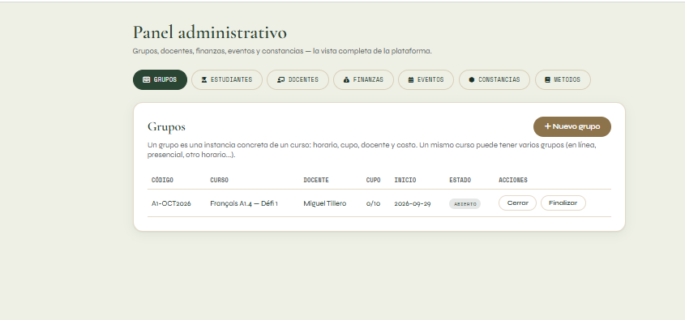
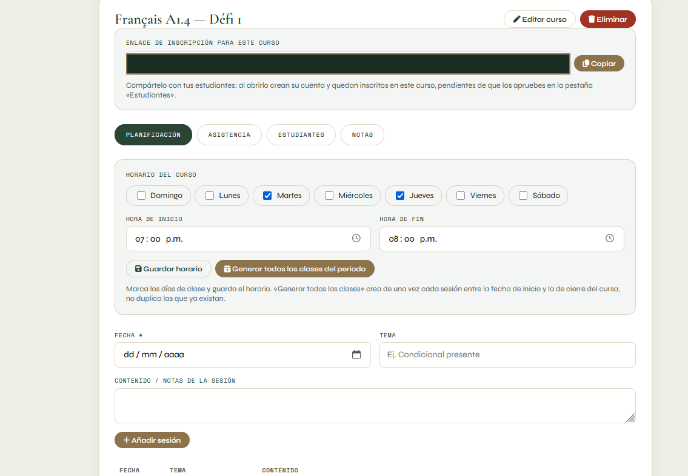
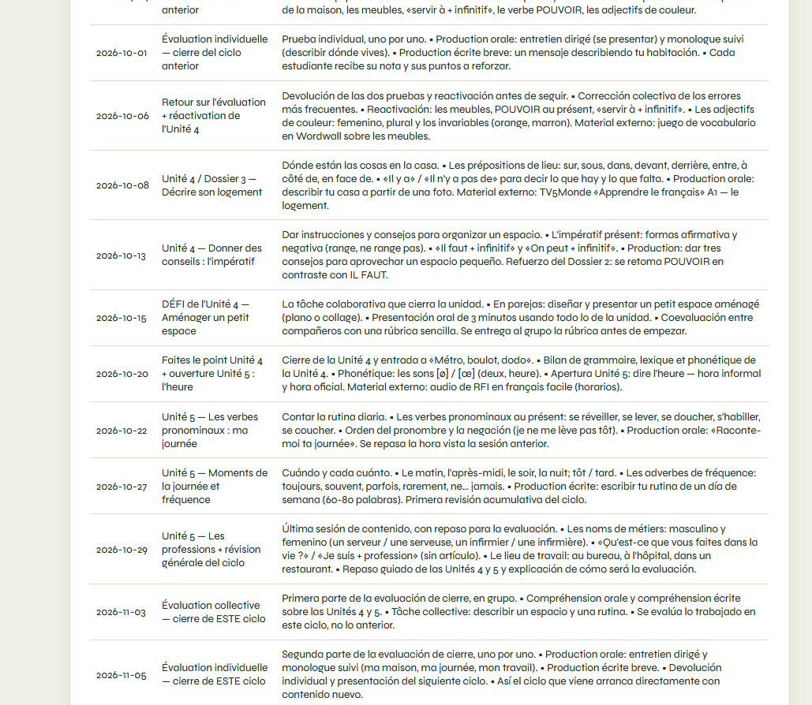
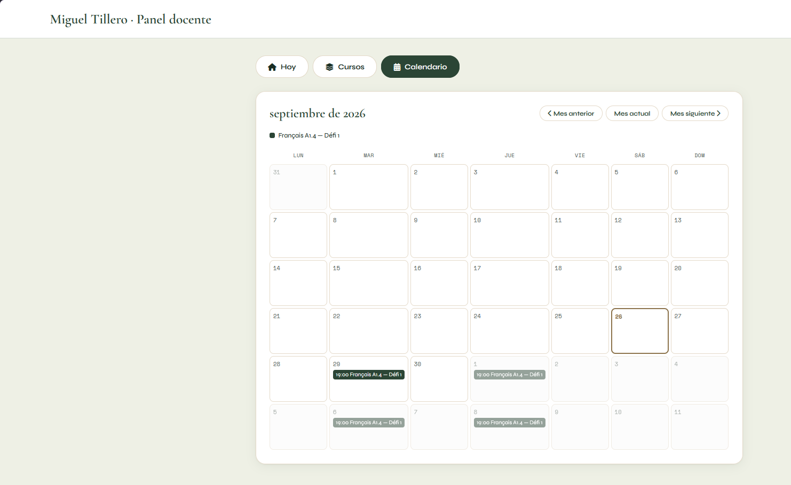
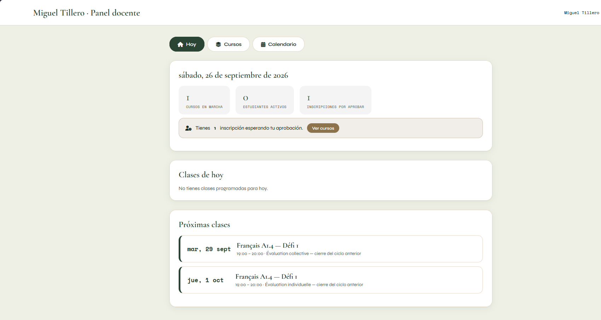
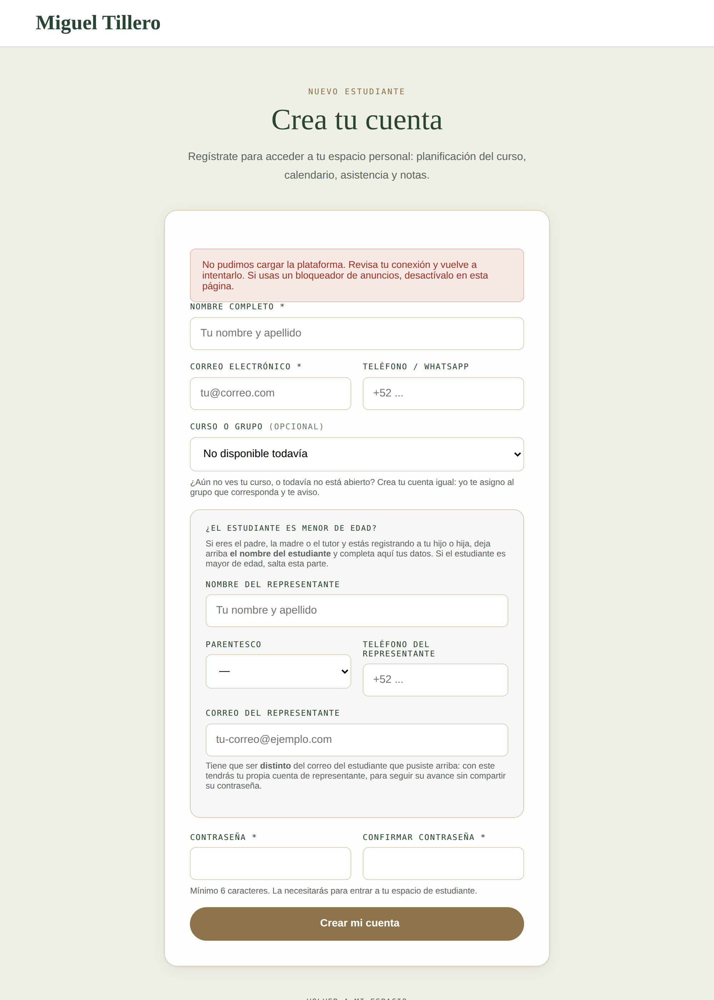
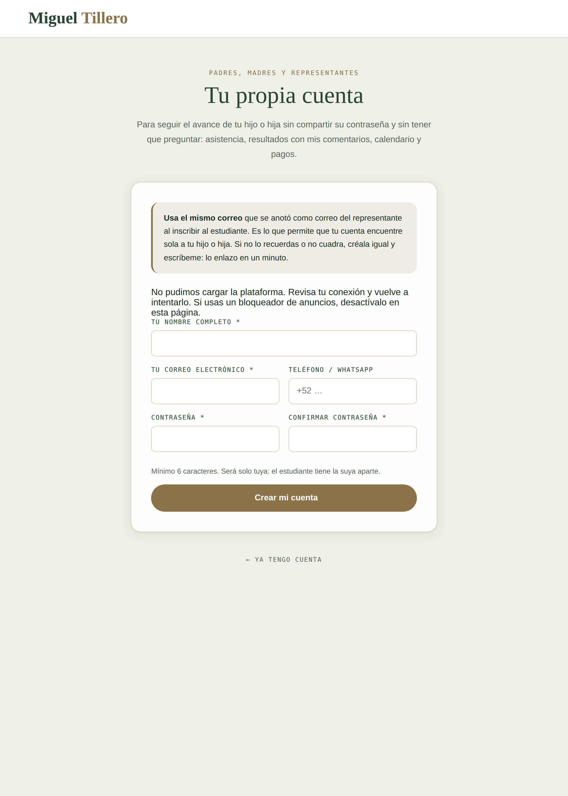
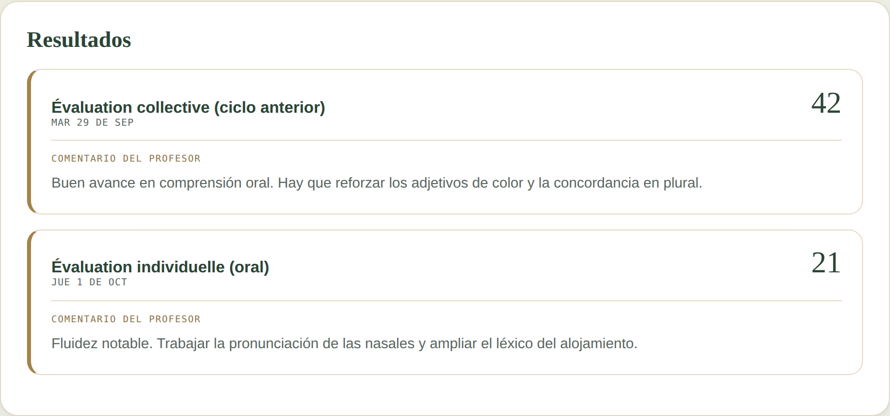
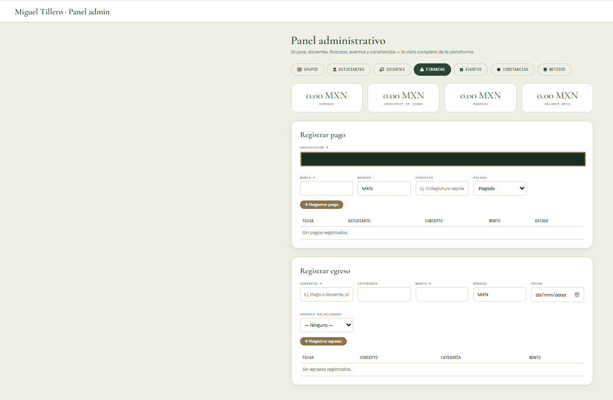
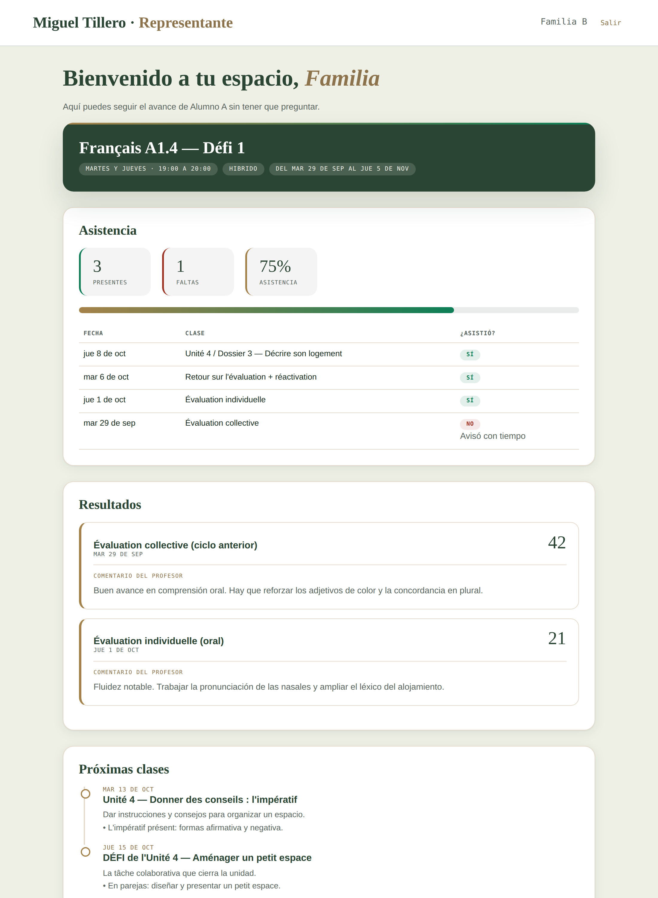
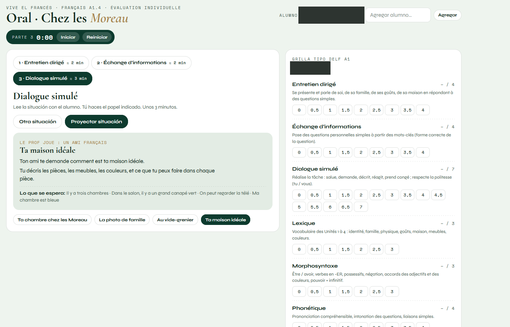
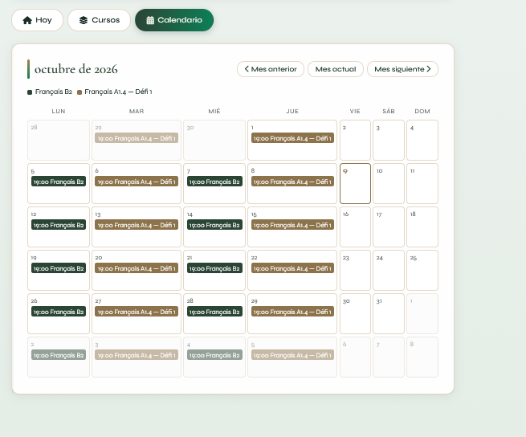
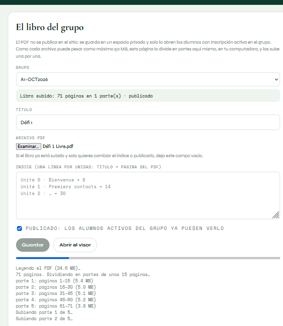
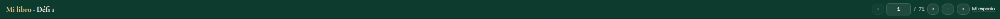
Plataforma educativa · Anexo técnico
Arquitectura, modelo de datos, seguridad por filas, orden de ejecución y las decisiones técnicas con su porqué.
Miguel David Tillero Álvarez
Octubre de 2026 · Versión 2.0 · actualizado al 14 de octubre
Documento complementario · no indispensable para valorar el proyecto
Dos piezas, deliberadamente pocas:
| Pieza | Qué es | Qué resuelve |
|---|---|---|
| GitHub Pages | Alojamiento de sitio estático | Sirve las 49 páginas. Sin servidor que mantener, sin costo, con publicación automática en cada cambio y con todo el historial versionado. |
| Supabase | Base de datos PostgreSQL con autenticación y reglas de acceso | Guarda los datos, gestiona las cuentas y decide quién puede leer qué. El navegador habla directamente con ella. Su almacenamiento privado guarda además el libro del curso. |
| pdf.js y pdf-lib | Bibliotecas que corren en el navegador | La primera muestra el libro página por página en el visor; la segunda lo divide en partes en la computadora del docente antes de subirlo. |
Navegador (página estática)
│
│ biblioteca oficial de Supabase, con la clave pública
▼
Supabase · PostgreSQL
├── Autenticación → quién eres
├── Seguridad por filas (RLS) → qué puedes ver
└── Funciones SECURITY DEFINER → lo que necesita privilegiosNo hay servidor propio en medio. La página llama a la base de datos con la clave pública, y es la base de datos la que decide qué devuelve según quién pregunta. Eso tiene una consecuencia que conviene entender: toda la seguridad vive en la base. No hay un intermediario donde esconder reglas; si una regla falta, el dato queda expuesto.
30 tablas, todas con seguridad por filas activada. Agrupadas por función:
profiles | Perfil de cada cuenta: nombre, teléfono, rol (docente, estudiante, admin, representante) y los datos del representante declarados al inscribirse. |
tutorias | Qué representante puede ver a qué estudiante. Una fila por pareja: un representante puede tener varios hijos, y un estudiante puede tener madre y padre. |
cursos | La materia: nombre, nivel, descripción. |
grupos | La instancia concreta: código, fechas, horario, modalidad, cupo, costo, estado, y las dos fechas de plazo (inscripción y pago). |
horarios | Días de la semana y horas de cada grupo. |
sesiones | Cada clase con su fecha, tema y contenido. Es la planificación. |
feriados | Días sin clase, para que la generación automática los salte. |
grupo_enlaces | Enlace de la clase y del grupo de mensajería, en tabla aparte y bajo llave. |
grupo_progresion | Histórico de unidades ya trabajadas, para el recorrido del estudiante. |
metodos, metodo_unidades | Catálogo de métodos y sus unidades, para crear cursos más rápido. |
inscripciones | Quién está en qué curso y en qué estado: pendiente, activa, rechazada, retirada, finalizada. |
asistencia | Presente o ausente por sesión y estudiante, con observación. |
pagos | Monto, moneda, concepto, estado y fecha de cobro. |
egresos | Gastos, para el balance neto. |
evaluaciones, notas | Evaluaciones del curso y la calificación de cada estudiante, con comentario y desglose por partes. |
examenes | Catálogo de exámenes en línea: título, código de acceso, duración, si está abierto. |
examenes_claves | La clave de respuestas. Solo accesible para administración; nunca sale al navegador. |
examenes_intentos | Cada intento: cuándo empezó, qué respondió, cuándo envió, desde dónde. |
boletines, boletin_notas | Boletín por estudiante con su identificador secreto, y sus resultados. |
validaciones_nivel | Validaciones de nivel alcanzadas. |
materiales | Repositorio por grupo, con categoría y unidad. |
libros | Ficha del libro de cada grupo: título, número de páginas, las partes en que se dividió, índice por unidades y si está publicado. El archivo vive en el almacenamiento privado. |
eventos | Eventos del sitio público. |
tipos_constancia, solicitudes_constancia | Preparadas; la emisión aún no está construida. |
vea_carnet, vea_estudiantes | Club «Vendredi entre Amis». |
PostgreSQL permite decidir, fila por fila, quién puede leerla o escribirla. Es el mecanismo que sostiene toda la privacidad del proyecto: un estudiante consulta la misma tabla que el docente, pero la base le devuelve únicamente lo suyo.
El 11 de septiembre, el primer día de la plataforma, las reglas entraron en recursión infinita. La causa es instructiva: para saber si alguien es docente hay que consultar su perfil; pero la tabla de perfiles tiene su propia regla, que para evaluarse necesita saber si es docente. El bucle no termina nunca y la base devuelve error.
La solución, aplicada en todo el proyecto desde entonces, es encapsular esas comprobaciones en funciones con privilegios propios, que no vuelven a pasar por las reglas:
create function public.es_admin() returns boolean
language sql stable security definer
as $$
select exists (
select 1 from public.profiles p
where p.id = auth.uid() and p.role in ('docente','admin')
);
$$;El mismo día se cerraron tres huecos por los que un usuario podía ver datos que no le correspondían.
El 25 de septiembre, preparando el primer ciclo, aparecieron dos fallos reales de privacidad, ambos en el mismo sitio:
La corrección fue estructural, no un parche: los enlaces se mudaron a
grupo_enlaces, una tabla aparte cuya regla de lectura exige inscripción
activa. Se comprobó cada caso: visitante anónimo, registrado sin inscripción,
inscrito pendiente, inscrito activo y docente.
Para el acceso de las familias había dos caminos. El primero: escribir políticas de lectura en las seis tablas implicadas —asistencia, notas, pagos, sesiones, cursos, inscripciones—. El segundo: una sola función que devuelva el panel ya armado.
Se eligió el segundo, por una razón concreta: seis tablas son seis sitios donde equivocarse, y un error ahí significa que una madre vea las notas del hijo de otra. La función:
Se verificó con dos familias simuladas en una base de pruebas: cada representante vio únicamente a su hija, y una estudiante no figuraba como representante de nadie.
Sentinelle aplica el mismo principio llevado al extremo: el alumno no tiene acceso a ninguna tabla. Solo puede invocar tres funciones —iniciar, guardar, enviar— con el identificador de su intento. La clave de respuestas vive en una tabla que únicamente administración puede leer, el reloj lo lleva el servidor, y cada guardado deja registro de su origen.
El libro no se sube nunca al repositorio, que es público. Va a un almacenamiento privado de la base de datos, con dos reglas: solo pueden subirlo el docente del grupo y la administración, y solo pueden leerlo ellos y quien tenga inscripción activa en ese grupo, siempre que el libro esté publicado. El visor recibe enlaces firmados que caducan, y cada página lleva una marca de agua con el nombre del lector.
El 9 de octubre se dio un paso más con los enlaces de Zoom: ya no se escriben en ningún archivo del repositorio. Se guardan solo en la base de datos, se cambian con una plantilla que se ejecuta en el editor, y un control automático rechaza cualquier cambio que intente subir un enlace de reunión. El representante ve el botón «Entrar a la clase» únicamente si la inscripción de su hijo está activa.
Los 29 archivos de la carpeta supabase/ tienen dependencias entre sí.
Cada uno declara en su cabecera después de cuál debe ejecutarse. Todos son
idempotentes: volver a ejecutarlos no rompe nada.
| Orden | Archivo | Qué aporta |
|---|---|---|
| 1 | schema.sql | Tablas base, roles y primeras políticas. |
| 2–6 | schema_v2 … schema_v6 | Evolución del esquema: grupos, pagos, eventos, métodos. |
| 7 | ciclo-a1-oct2026.sql | El ciclo A1.4: curso, grupo, horarios, doce sesiones y dos evaluaciones. |
| 8 | ciclo-a1-detalles.sql | Enlaces de clase, unidad actual, mensaje de bienvenida, progresión. |
| 9 | materiales-y-resultados.sql | Repositorio de materiales y notas devueltas. |
| 10 | representante-y-enlaces.sql | Datos del representante; los enlaces pasan a tabla propia bajo llave. |
| 11 | plazo-inscripcion.sql | Plazos de inscripción y de pago, separados, en hora de México. |
| 12 | evaluaciones-sentinelle.sql | Sistema de exámenes en línea con control de integridad. |
| 13 | resultados-a1-4.sql | Publicación de los resultados en «Mis resultados». |
| 14 | boletines.sql | Boletines con enlace privado para las familias. |
| 15 | representantes-acceso.sql | Cuenta propia del representante y función del panel. |
| 16 | representante-correo.sql | Corrección del correo del representante y enlace manual. |
| 17 | libro-virtual.sql | Almacenamiento privado del libro, su ficha y las reglas de lectura. |
| 18 | ciclo-b2-oct2026.sql | El ciclo B2: curso, grupo, horario de lunes y miércoles, doce sesiones, evaluaciones de cierre y materiales. |
| 19 | representante-enlace-clase.sql | El botón «Entrar a la clase» en el panel del representante, solo con inscripción activa. |
TODO-EN-UNO.sql agrupa los pasos 1 a 7 en un solo archivo, para una
instalación inicial de una sola pegada.
consultas-del-dia-a-dia.sql | Siete bloques sueltos: estado del grupo, activar a alguien, registrar un pago, quién es quién, clases que vienen, dinero del ciclo. |
aprobar-inscripciones.sql | Aprobar inscripciones sin pasar por el panel. |
baja-estudiante.sql | Retirada de un estudiante a mitad de ciclo. |
estudiantes-sin-grupo.sql | Asignar grupo a quien se registró sin él. |
cambiar-enlace-zoom.sql | Cambiar el enlace de la clase de un grupo sin escribirlo en el repositorio. |
evento_*.sql, carnet_*.sql | Eventos del sitio y carnets del club. |
La carpeta supabase/pruebas/ contiene una simulación del entorno que
permite ejecutar y verificar los guiones en un PostgreSQL local, sin tocar los datos
reales. Todas las funciones descritas en este anexo se probaron ahí antes de aplicarse:
los emparejamientos de representantes en ambos sentidos, el aislamiento entre familias,
los límites de los plazos y la baja de estudiante.
Sin servidor no hay servidor que caiga, que actualizar ni que pagar. El precio es que toda la lógica sensible debe vivir en la base de datos. Para un proyecto de un docente, el intercambio compensa con holgura.
Menos superficie de error. Seis políticas en seis tablas son seis oportunidades de dejar un hueco; una función sin parámetros, filtrada por el usuario autenticado, es una sola cosa que revisar. Ya habíamos pagado el precio de una recursión de políticas; no tenía sentido repetir el patrón.
Las notas no podían esperar a que cada familia creara una cuenta. El identificador es imposible de adivinar y no permite listar los demás boletines. La contrapartida es explícita: quien reciba el enlace, entra. Por eso se envía siempre por mensaje privado.
Detalle pequeño con consecuencia grande. PostgreSQL trabaja por omisión en hora universal; con esa referencia, el martes a las seis de la tarde en México ya es miércoles, y el plazo de inscripción se habría cerrado una hora antes de la clase. Todas las comparaciones de fecha pasan por una función que fija la zona horaria.
Se construyó una integración de cobro automático y se retiró una semana después. No correspondía a la forma real de trabajar: transferencias y depósitos sin emisión de factura con RFC. Mantener una función que no refleja la realidad del negocio es deuda, no capacidad.
Seis intentos de arreglar el inicio de sesión apuntaban al código; la causa estaba en el almacenamiento del navegador, que a veces no guarda lo que se le pide. La solución fue comprobar cada escritura leyéndola de vuelta y, si falla, degradar a almacenamiento de sesión o de memoria. Y, sobre todo, no borrar jamás una sesión que todavía es válida: una limpieza demasiado agresiva puede dejar a alguien fuera de su cuenta permanentemente.
Se evaluó un proveedor transaccional con dominio propio. Requiere un dominio registrado, que el proyecto no tiene. La alternativa —enviar desde una cuenta de correo personal con contraseña de aplicación— es menos elegante pero entrega mejor hoy: una dirección con años de historial inspira más confianza a los filtros de correo que un dominio estrenado ayer. El camino al escalón siguiente queda documentado.
El plan gratuito de la base de datos acepta archivos de hasta 50 MB y el libro pesa más. La página de carga lo divide en partes de unos 6 MB en la computadora del docente. Las partes pequeñas tienen una segunda ventaja: el estudiante solo descarga la que está leyendo, y en el teléfono la primera página aparece en segundos. El visor descarga cada parte entera, con barra de avance, porque la lectura por fragmentos se quedaba colgada con los enlaces firmados.
Nombres de tablas, funciones, variables y comentarios en español. El proyecto lo mantiene un profesor de francés que trabaja en español, no un equipo de desarrollo angloparlante. Que el código se lea en el idioma en que se piensa reduce el coste de volver a él tres meses después.
Lo que un revisor técnico encontraría, dicho antes de que lo encuentre:
| Asunto | Situación |
|---|---|
| Esquema en seis versiones sucesivas | De schema.sql a schema_v6.sql. Funciona y es idempotente, pero un esquema consolidado sería más fácil de leer para quien llegue nuevo. |
| Operaciones que solo existen en SQL | Baja de estudiante, plazos y enlace manual de representantes se ejecutan desde el editor de la base, no desde el panel. Funciona, pero exige al docente pegar consultas. |
| Estilos repetidos entre páginas | Cada panel lleva sus propios estilos incrustados. Se unificó el bloque de audio, que estaba copiado en once páginas; queda trabajo similar pendiente. |
| Pruebas automatizadas parciales | Hay banco de pruebas para la base de datos y pruebas de navegador para funciones concretas, pero no una batería que se ejecute en cada cambio. |
| Crear un ciclo exige un archivo de configuración | Cada ciclo nuevo (A1.4, B2) se da de alta ejecutando su archivo en la base de datos. Funciona y no duplica nada, pero debería poder hacerse desde el panel. |
| Herramienta oral de un solo uso | La prueba oral está programada para la evaluación A1.4; cada nivel necesita hoy su propia versión. |
| Dos cuentas de personal | Una con rol admin y otra con rol docente, ambas del mismo profesor. Funciona, pero se presta a confusión y conviene unificar. |
Vive el francés · Plataforma educativa
Miguel David Tillero Álvarez · Profesor de francés (FLE)
Anexo técnico · Versión 2.0 · Octubre de 2026
Parte 5
Qué se hizo, cuándo y en qué cambio del historial, del 7 de septiembre al 9 de octubre de 2026.
Qué se hizo, cuándo y en qué cambio del historial.
Se omiten los cambios puramente estéticos y las fusiones de ramas; el historial completo está en el repositorio.
Periodo: del 7 de septiembre al 9 de octubre de 2026 Cambios registrados en total: 212 (sin contar las fusiones de ramas) Cambios sustantivos recogidos aquí: 157 en siete fases
2026-09-07 → 2026-09-10 · 44 cambios
De una página única a una arquitectura de varias páginas reales. Identidad visual, perfil, servicios, cursos, galería y métodos de pago. Incluye una pérdida de contenido por error propio y su recuperación completa desde el historial.
| Fecha | Cambio | Qué se hizo |
|---|---|---|
| 2026-09-07 | 60c1e39 | Corregir sintaxis del script y definir closeIntro correctamente |
| 2026-09-07 | fdffc83 | Corregir event triggers en workflow de GitHub Pages |
| 2026-09-07 | 53c7327 | Corregir sintaxis de backticks en galeria y source de video intro |
| 2026-09-07 | f359d59 | Script duplicado, template literal de galeria y source del video intro |
| 2026-09-07 | 25d0070 | Reestructuracion completa en arquitectura multipagina limpia |
| 2026-09-07 | ff49c4d | Poblar perfil.html con contenido real y estructurado |
| 2026-09-07 | 2a9c02e | Reestructuración completa en arquitectura multipágina desde index(6) |
| 2026-09-07 | 68c32f7 | Restaurar secciones completas de perfil en perfil.html |
| 2026-09-07 | 3526958 | Reposicionar el boton saltar en la esquina superior derecha |
| 2026-09-07 | 6bebc49 | Crear assets/images, sincronizar retratos y depurar recursos duplicados |
| 2026-09-07 | 4d078bb | Restaurar diseno original y posicion absoluta del boton saltar |
| 2026-09-07 | 5f5af93 | Restaurar diseno original y posicion absoluta del boton saltar |
| 2026-09-07 | faa06b9 | Reparar sintaxis CSS y restaurar diseño del boton saltar en todo el ecosistema |
| 2026-09-07 | a901265 | Eliminar video intro de las subpaginas y aplicar sessionStorage en la portada |
| 2026-09-07 | 68f9a62 | Purgar video intro de las subpaginas y habilitar sessionStorage en index |
| 2026-09-07 | 02d7382 | Reconstruccion total desde archivo maestro recuperando contenidos y enlaces |
| 2026-09-07 | 1a61fa1 | Reconstruccion total desde archivo maestro recuperando contenidos reales y enlaces |
| 2026-09-07 | 83b1a8a | Corregir sintaxis PowerShell y poblar subpaginas con el contenido maestro |
| 2026-09-07 | a40d556 | Restaurar CSS original borrado por error, forzar video 4k a pantalla completa y ensamblar |
| 2026-09-07 | 04d1b98 | Revertir a SPA original, restaurar enrutador JS nativo y blindar portada |
| 2026-09-07 | 37c9b3f | Agregar menu completo, limpiar HTML duplicado, formulario de contacto EmailJS y fotos de perfil |
| 2026-09-07 | cb6517c | Restaurar mi-espacio, reglamento, reservar y testimonios borrados por error |
| 2026-09-07 | 9f4d3cd | Agregar menu hamburguesa responsivo en las 8 paginas principales |
| 2026-09-07 | 1f0a2ad | Conectar navegacion completa: Testimonios, Recursos y Reservar en todas las paginas |
| 2026-09-08 | fab0040 | Eliminar archivos huerfanos: index maestro viejo y backups sueltos |
| 2026-09-08 | a29cb0a | Recuperacion maestra desde Git, SPA original restaurada y estilos 4K inyectados |
| 2026-09-08 | 546d73f | Restaurar anclajes hash para navegacion SPA y reparar error 404 |
| 2026-09-08 | c609392 | Restaurar anclajes hash para navegacion SPA y reparar error 404 |
| 2026-09-08 | 64a0613 | Arquitectura maestra SPA restaurada y estabilizada al 100% |
| 2026-09-09 | c85e3b4 | Sitio completo desde commit estable c609392 |
| 2026-09-09 | a151908 | Restaurar version original intacta, anadir estilos 4K, musica y SPA |
| 2026-09-09 | cfe2f49 | Eliminar bucle infinito de imagen rota y corregir enlaces internos; anadir paginas de cursos, examenes y registro |
| 2026-09-09 | 39daa0d | Quitar videos institucionales de Alianza Francesa y CAVILAM |
| 2026-09-09 | da596ad | Completar Mi espacio con las aulas virtuales A1 y B2 |
| 2026-09-09 | aaad4a6 | Usar video real de Miguel en la seccion "En video" |
| 2026-09-10 | c9e40d1 | Reemplazar fotos de retrato por las nuevas fotos reales de Miguel |
| 2026-09-10 | 458c324 | Restaurar homogeneizacion visual perdida en index.html |
| 2026-09-10 | 2cf9f00 | Separar el sitio en paginas reales por seccion + arreglos de video, musica y contacto |
| 2026-09-10 | e19aae5 | Agregar foto de Paris como cabecera de perfil.html |
| 2026-09-10 | c49e8cb | Homogeneizar botones secundarios sueltos (CV, testimonio, inscripcion) |
| 2026-09-10 | efd3e7b | Agregar el club "Vendredi entre Amis" y enlazarlo desde el pie de pagina |
| 2026-09-10 | ed072d7 | Tarjetas de cursos/servicios clicables con formulario prellenado y Vendredi entre Amis destacado |
| 2026-09-10 | 237e29c | Video de transicion entre secciones (una vez por pagina) y boton de vista de escritorio |
| 2026-09-10 | 1cb74bb | Corregir musica de fondo, limitar video de transicion a 3 usos, reconstruir pagos y eliminar codigo de mantenimiento |
2026-09-11 → 2026-09-11 · 21 cambios
Base de datos, autenticación y roles. Primer esquema. Primera crisis de seguridad: recursión en las reglas de acceso y tres huecos cerrados el mismo día.
| Fecha | Cambio | Qué se hizo |
|---|---|---|
| 2026-09-11 | 32e5344 | Completar metodos de pago reales en pagos.html |
| 2026-09-11 | 77ff3d3 | Quitar tarjeta de PayPal en pagos.html (no lo usa Miguel) |
| 2026-09-11 | ce6dee7 | Vincular Vendredi entre Amis al sitio publicado (VendrediEntreAmis) |
| 2026-09-11 | 96e4849 | Añade la fecha de la próxima sesión en la tarjeta de Vendredi entre Amis |
| 2026-09-11 | 729b52c | Añade base de plataforma docente/estudiantil con Supabase |
| 2026-09-11 | 2ace70a | Completa la plataforma docente/estudiantil sobre Supabase |
| 2026-09-11 | d1391ae | Conecta la plataforma con el proyecto Supabase real |
| 2026-09-11 | b855f5e | Corrige orden de creación en schema.sql (tablas antes que políticas) |
| 2026-09-11 | b76fd56 | Corrige redirecciones absolutas que rompían el login en GitHub Pages |
| 2026-09-11 | 5a63cd2 | Corrige carrera al leer sesión/rol justo tras iniciar sesión |
| 2026-09-11 | e4dbb36 | Añade diagnóstico detallado cuando falla la lectura del perfil tras iniciar sesión |
| 2026-09-11 | 4550a8f | Evita depender de getSession() justo tras iniciar sesión |
| 2026-09-11 | ccf3787 | Añade versión de caché a los scripts compartidos |
| 2026-09-11 | ec3514f | Corrige recursión infinita en las políticas RLS y cierra tres huecos de seguridad |
| 2026-09-11 | d60010b | Fija la sesión explícitamente tras el login y añade página de diagnóstico |
| 2026-09-11 | 50511c8 | Añade enlace de inscripción por curso |
| 2026-09-11 | 57a540c | Completar boton flotante Vendredi entre Amis en todas las paginas y arreglar i18n sitewide |
| 2026-09-11 | b6693c4 | Quita la página de diagnóstico y suma el Módulo 3 de una alumna (nombre omitido) |
| 2026-09-11 | 90c5f83 | Añade un carrusel de vídeos en inicio y galería |
| 2026-09-11 | 9cf9dab | Elimina la página de diagnóstico |
| 2026-09-11 | cf38fcc | Añade edición de cursos, horario con generación de clases y nueva contraseña |
2026-09-13 → 2026-09-24 · 21 cambios
Buscadores, carrusel de vídeos, galería profesional y el relato de trayectoria con 19 capítulos verificados uno a uno antes de publicarse.
| Fecha | Cambio | Qué se hizo |
|---|---|---|
| 2026-09-13 | 0e39b2b | Ronda de correcciones de sitio - hero, perfil, servicios, galeria, contacto, reservar/reglamento |
| 2026-09-15 | 91e4074 | Añade robots.txt y sitemap.xml |
| 2026-09-15 | 0cc287f | Corrige los textos del carrusel y usa fotogramas reales como póster |
| 2026-09-15 | d468ea0 | La cortinilla cubre la carga en vez de hacerse esperar |
| 2026-09-15 | 4b66ace | Comprime 4k.mp4 y deja de descargarlo cuando el intro no se ve |
| 2026-09-15 | 129f373 | Panel docente: inicio "Hoy" y calendario mensual |
| 2026-09-16 | 2bb683e | Pasa presentacion-1 a H.264, unifica el vídeo duplicado y desbloquea el intro |
| 2026-09-16 | eda1b48 | Evita que un CDN caído deje páginas muertas |
| 2026-09-16 | db20e0b | Recomprime las fotos del sitio: 912 KB menos |
| 2026-09-16 | 8ae88b6 | Saca a un archivo el CSS que estaba copiado en cada página |
| 2026-09-17 | 60ccc4e | Enlaza el álbum de Google Photos desde la galería |
| 2026-09-18 | 499c8cb | Añade migración SQL para el Carnet de Voyage de Vendredi entre Amis |
| 2026-09-18 | 42b2823 | Añade tabla y función para bienvenida personalizada del Carnet de Voyage |
| 2026-09-18 | 3e9edf5 | Motor de gestión académica (grupos, pagos, eventos, admin.html) y evento dinámico |
| 2026-09-18 | 5bd39df | Fase 4 — paneles docente/estudiante adaptados al modelo de grupos |
| 2026-09-21 | eed80f9 | Blindar el cupo del grupo contra valores vacíos/inválidos |
| 2026-09-22 | 8f52197 | Catálogo de métodos/manuales FLE con progresión por unidades |
| 2026-09-23 | b6542d7 | Unidades reales de Défi 3 confirmadas |
| 2026-09-23 | a0f1f91 | Corrige la atribución de Défi 2/3 y agrega Défi 4 y 5 completos |
| 2026-09-24 | 51cd8a6 | Perfil como relato inmersivo con pruebas fotográficas y de video |
| 2026-09-24 | c5c7a56 | Video de las clases en el inicio y en la galería; ya no aparece como director |
2026-09-25 → 2026-09-25 · 27 cambios
Ciclo A1.4 con sus doce sesiones. Espacio del estudiante. Datos del representante. Dos huecos de privacidad encontrados y cerrados. Auditoría móvil. La saga del inicio de sesión.
| Fecha | Cambio | Qué se hizo |
|---|---|---|
| 2026-09-25 | e83b1a3 | 24 fotos editadas en el relato, novedad Destination Francophonie y fondos fotográficos |
| 2026-09-25 | 0d4d417 | Ciclo A1 octubre 2026: plan de 12 sesiones, paso de pago y materiales |
| 2026-09-25 | 1bffbfe | Álbum completo de la trayectoria, 19 capítulos verificados y más fotos en cada sección |
| 2026-09-25 | 05794bd | Archivo único para pegar en Supabase de una sola vez |
| 2026-09-25 | be5ca28 | Video «Mi trayectoria» en el perfil y en la galería de videos |
| 2026-09-25 | d5b429e | El rodaje de Destination Francophonie presenta la sede renovada de la Alianza (rol confirmado por Miguel) |
| 2026-09-25 | 159cf99 | Karen Elizabeth (ITAES), Patrick de Bréon (†2026) y la foto de entrevista pasa al video de presentación |
| 2026-09-25 | e6d607e | Espacio del estudiante: bienvenida, recorrido y detalles del curso |
| 2026-09-25 | b3f0fe6 | Romain Nadal (embajador en Venezuela, 2023) y L'Étape Ecuador con el embajador Frédéric Desagneaux |
| 2026-09-25 | e924c39 | Panel de control del estudiante: repositorio y Mis resultados |
| 2026-09-25 | 0ed2faa | Maura Carpio (La Salle) y Jaime Casanova (video promocional de la Alianza) |
| 2026-09-25 | a810d4d | Gloria Ramos, arquitecta y colaboradora de la Alianza, en la foto del consulado |
| 2026-09-25 | 5b61366 | El login manda a los administradores al panel docente y las consultas siempre llevan el token de la sesión |
| 2026-09-25 | 7cafeec | Normaliza la dirección del correo de verificación |
| 2026-09-25 | dc7b476 | Datos del representante y enlaces de clase bajo llave |
| 2026-09-25 | edf2488 | Auditoría móvil: objetivos táctiles y textos legibles en el teléfono |
| 2026-09-25 | b967f49 | Evita que el plan B del login invalide la sesión recién creada |
| 2026-09-25 | 233703e | Invitación a la première de «Destination Francophonie au Mexique» (26 de septiembre, 18:00, El Rastro) |
| 2026-09-25 | fd65d39 | Un token caducado ya no deja al usuario encerrado fuera de su panel |
| 2026-09-25 | 04d4130 | Fotos reales del rodaje, encuadres sin solapes, miniaturas nuevas del video de clases y botón Vendredi compacto |
| 2026-09-25 | a4e94f4 | Solo fotos profesionales en la galería y nombres verificados en los pies de foto |
| 2026-09-25 | 6cba028 | No borrar nunca una sesión que todavía es válida |
| 2026-09-25 | 28b56f3 | El diagnóstico dice ahora si el login devolvió sesión o solo usuario |
| 2026-09-25 | c8de480 | La sesión ya no se pierde si el almacenamiento del navegador falla |
| 2026-09-25 | 6546879 | El login ya no manda al panel si la sesión no quedó guardada |
| 2026-09-25 | 383409c | Los paneles muestran el error en vez de quedarse en blanco |
| 2026-09-25 | 98cf9da | El panel deja de rebotar al login cuando la sesión sí es válida |
2026-09-26 → 2026-09-30 · 22 cambios
Correo propio, plazos de inscripción y de pago separados, material de comunicación y la lista de comprobación del arranque.
| Fecha | Cambio | Qué se hizo |
|---|---|---|
| 2026-09-26 | 4dbd52e | Consultas para aprobar inscripciones sin pasar por el panel |
| 2026-09-26 | d6696be | Entrar al panel sin depender de que el navegador guarde la sesión |
| 2026-09-26 | 8fe2255 | Llevar a su panel a quien entra por la página equivocada |
| 2026-09-26 | c4d3f2d | Infografía del ciclo, al día y con lo que faltaba |
| 2026-09-26 | 9dce871 | Guardar los mensajes del ciclo y la guía del correo propio |
| 2026-09-26 | 2dc73ca | Juan Francisco Coba (Cogiler) y horarios de TV5MONDE en hora de México |
| 2026-09-26 | 61cfa9a | Inscripción sin curso — la cuenta se crea aunque el grupo no exista y el administrador asigna después |
| 2026-09-27 | c3810db | El rol admin entra ahora a admin.html, no a panel-docente.html |
| 2026-09-27 | 03f6bdc | Botón «Reabrir» para deshacer un «Cerrar» sin pasar por Supabase |
| 2026-09-28 | bb844d5 | Camino sin dominio para tener el correo funcionando hoy |
| 2026-09-28 | d95bdbe | Fotos reales de la conferencia de Meirieu en la UNAE y portada del libro traducido |
| 2026-09-28 | 863eb29 | La música suena una vez y el vídeo manda |
| 2026-09-28 | bc287c5 | Hay plazo hasta el primer día del ciclo, inclusive |
| 2026-09-29 | bd9ad59 | Separar el plazo para inscribirse del plazo para pagar |
| 2026-09-29 | be33bc5 | El mensaje ofrece antes de cobrar |
| 2026-09-28 | 61d7270 | Fecha, hora y lugar exactos de la conferencia de Meirieu, según el volante oficial |
| 2026-09-29 | ab49716 | Checklist de arranque con los enlaces directos |
| 2026-09-29 | 44e0028 | La dirección buena del SMTP, y qué contraseña va ahí |
| 2026-09-29 | ea241cd | Infografía del paso a paso para entrar a la plataforma |
| 2026-09-28 | cd8570a | Pagos con Stripe (modo de prueba) — Edge Functions y botón «Cobrar con Stripe» |
| 2026-09-29 | eb977bc | Todo el envío en un solo archivo, sin nada que rellenar |
| 2026-09-29 | c2bf9a4 | Add files via upload |
2026-10-01 → 2026-10-03 · 12 cambios
Pagos manuales, publicación de resultados, boletines con enlace privado, baja de estudiante y acceso propio para representantes.
| Fecha | Cambio | Qué se hizo |
|---|---|---|
| 2026-10-01 | b402d92 | Pagos por transferencia manual (Nu/Albo) en vez de Stripe |
| 2026-10-01 | 5a5fd68 | Agregar Remitly a los datos de pago del estudiante |
| 2026-10-02 | ab7c7b4 | Resultados A1.4 en «Mis resultados» y envío a representantes |
| 2026-10-02 | 3af8632 | Boletines de resultados con enlace privado para las familias |
| 2026-10-02 | 8614ede | Guía para pasar la plataforma a dominio propio |
| 2026-10-02 | bfd597b | El sitio se queda en GitHub Pages |
| 2026-10-02 | 9ddbc3f | Dar de baja a un estudiante que se retira |
| 2026-10-02 | 13ac1f0 | Las consultas que hacen falta cada semana, en un solo archivo |
| 2026-10-03 | d89d44f | Acceso propio para padres, madres y representantes |
| 2026-10-02 | 86772de | Lugar y año de la foto del panel «Zona Talentos» (Cuenca, 2021) |
| 2026-10-03 | ff657fd | Pedir el correo del representante, en vez de inventárselo |
| 2026-10-03 | fe53813 | Enlazar el boletín existente cuando el alumno ya tiene cuenta activa |
2026-10-04 → 2026-10-09 · 10 cambios
Libro virtual en un almacenamiento privado, segundo grupo (B2) con la misma estructura que el A1.4, boletines para cualquier grupo y enlaces de Zoom fuera del repositorio.
| Fecha | Cambio | Qué se hizo |
|---|---|---|
| 2026-10-04 | 0a67ac6 | Sobre mí con puertas, banners con foto entera, pagos con logos, preguntas frecuentes, formularios por pasos y rendimiento |
| 2026-10-04 | c047b2d | Registro, contraseña, agradecimiento y panel del representante con el diseño del sitio |
| 2026-10-04 | a708a8b | Libro virtual en el espacio del estudiante |
| 2026-10-05 | 90e0181 | El visor del libro descarga cada parte con barra de avance |
| 2026-10-05 | 0ceb6c0 | Sin desbordes en el teléfono (cursos, exámenes, carrusel de vídeos) |
| 2026-10-05 | 7218074 | Grupo B2 (ciclo del 5 de octubre al 11 de noviembre) y boletines para cualquier grupo |
| 2026-10-05 | 857fd5c | Costo del ciclo B2 |
| 2026-10-05 | 5d20a45 | Enlace al episodio «Destination francophonie · México (Parte 1)» en TV5MONDE+ |
| 2026-10-09 | dff5f23 | Enlaces de Zoom fuera del repositorio y botón «Entrar a la clase» en el panel del representante |
| 2026-10-09 | 6bfd736 | Documentación del proyecto para revisión externa |
Búsqueda automática de patrones sensibles sobre 12 archivos de texto de la carpeta documentacion/, hecha antes de empaquetar.
Un hallazgo, ya corregido. En la revisión de la versión 2.0 (14 de octubre) apareció el nombre de una alumna en un mensaje del registro de cambios; se reemplazó por «una alumna (nombre omitido)». La única otra coincidencia es la propia palabra «pwd=» en la lista de patrones de este informe. Fuera de eso, ningún patrón aparece en el material.
Los ejemplos inventados a propósito (ejemplo.com, «Alumno A», «Familia B», CORREO-DE-…) y los marcadores de los propios documentos. No son datos de nadie.
La búsqueda automática recorre texto, no imágenes. Las catorce capturas se revisaron una a una, a tamaño completo, antes de incluirse:
Se comprobó además que ninguno de los catorce PNG arrastra metadatos incrustados (autor, dispositivo, ubicación). Los catorce están limpios.
Informe regenerado antes del empaquetado de la versión 2.0 · 14 de octubre de 2026
Vive el francés · Plataforma educativa
Miguel David Tillero Álvarez · Profesor de francés (FLE)
Documentación completa · Versión 2.0 · Octubre de 2026